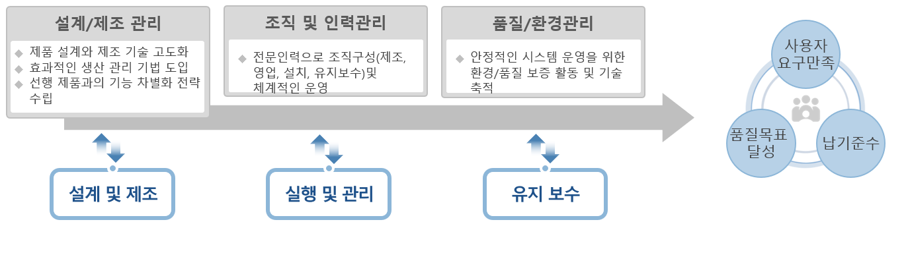
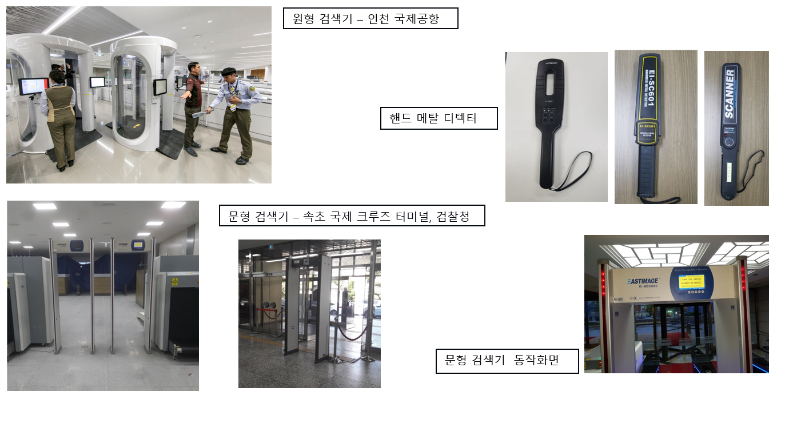

금속 탐지 시스템
금속 탐지 시스템이란
공항, 기차역, 버스 정류장, 정부 기관, 대사관, 회의장, 우체국, 학교 등 공공 시설 또는 다중 이용시설에서
개인이 휴대하는 휴대물품을 휴대물품 검색기에 검사하고 각 개인의 신체에 소지하고 있는 사회안전 위해 물품을 색출 해 내기 위한
장비로서 인체를 1차, 2차로 나누어 세부적으로 검사 하기 위해 보안 검색 분야에서 널리 사용됩니다. 본 장비는 인체에 해가
없도록 X-Ray를 사용하지 않고 자기장을 이용하므로 금속으로 구성된 소지 물품을 효과적으로 검색 합니다 즉 개인이 소지하고
있는 총기, 도검 류 등 금속 물체를 신속하고 효과적으로 색출, 적발하기 위한 장비 임.
기술의 세부 분야
금속 탐지 시스템을 제조하기 위해서는 자기장 혹은 초음파를 이용한 기계설계와 탐지 신호와 영상 처리를 위한
소프트웨어 기술이 필요 하므로 제작경험이 풍부한 전문인력과 연구인력이 확보하여 충분한 투자와 선행 기술을 가진 외국 유수의
제조업체들과의 지속적인 기술교류가 활성화 되어야 하고 교육을 통한 유지보수 인력의 충분한 기술 축척이 필수 임.

금속 탐지 시스템 소개
공공 시설 및 다중 이용시설에서 개인이 소지하고 있는 총기 도검 류 등 금속 물체를 신속하고 효과적으로 색출,
적발하기 위한 첨단솔루션 으로서 자기장이나 초음파를 이용하여 인체에 무해 함
